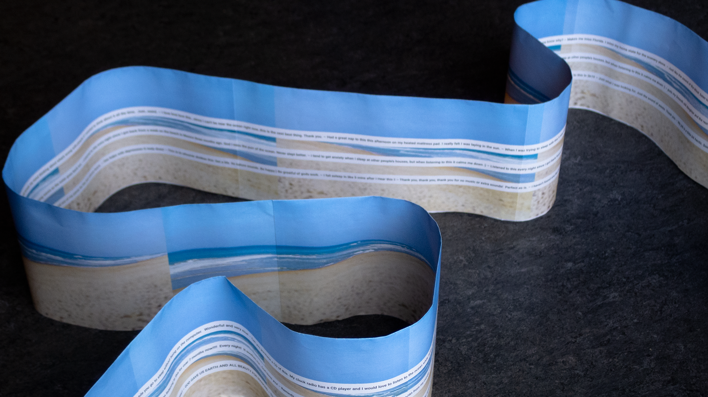
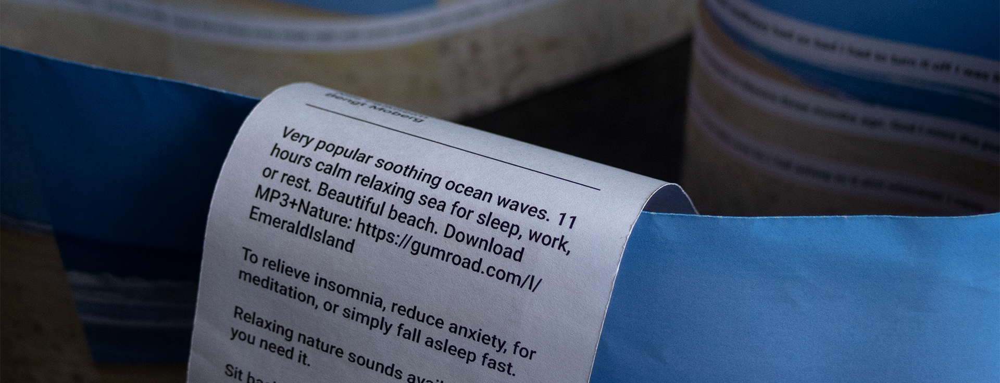

WAVES
Waves is an unconventional rendering of the 11 hour youtube video
"😴🌊 Healing Sea #1 #Relax24Ocean"
. The publication is designed as an endless scroll with chosen youtube comments displayed on the inside - like subtitles to a movie.

